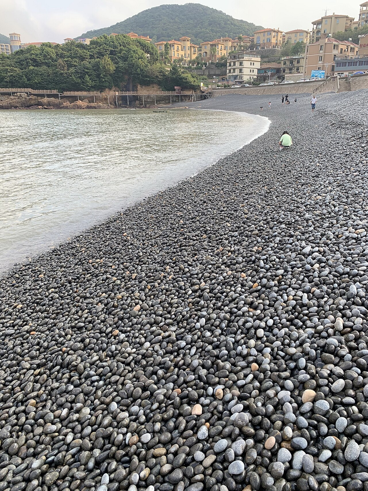

舟山
/
玩乐地
/
小乌石塘
小乌石塘
免费赶海 · 翻石抓蟹 · 低龄友好

朱家尖小乌石塘
建议从携程/App查看最新实拍
小乌石塘黑色鹅卵石海滩实景 · 照片待补充
免费
赶海
抓螃蟹
鹅卵石滩
项目
详情
地址
浙江省舟山市普陀区朱家尖小乌石塘村
门票
免费（停车约 15–20 元）
营业时间
全天开放
特点
黑色鹅卵石滩，翻石可见小螃蟹、寄居蟹
免费，人流量比收费沙滩少
适合低龄儿童体验赶海
适合谁
抓蟹
轻松
注意：
潮汐影响大，建议低潮时段前往。
礁石区湿滑，注意孩子安全。
穿防滑溯溪鞋，禁止带走贝类。
介绍
不花钱的亲子彩蛋，带个小桶和铲子，翻鹅卵石就能找到小螃蟹，是 6 岁女童会喜欢的'寻宝'体验。